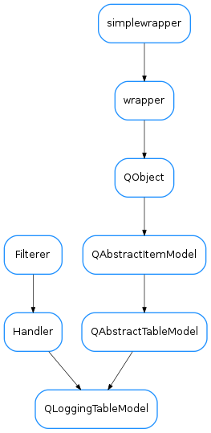

QLoggingTableModel¶

-
class
QLoggingTableModel(capacity=500000, freq=0.25)[source]¶ Bases:
PyQt4.QtCore.QAbstractTableModel,logging.Handler-
DftColSize= (PyQt4.QtCore.QSize(80, 20), PyQt4.QtCore.QSize(200, 20), PyQt4.QtCore.QSize(300, 20), PyQt4.QtCore.QSize(180, 20), PyQt4.QtCore.QSize(240, 20))¶
-
DftFont= <PyQt4.QtGui.QFont object>¶
-